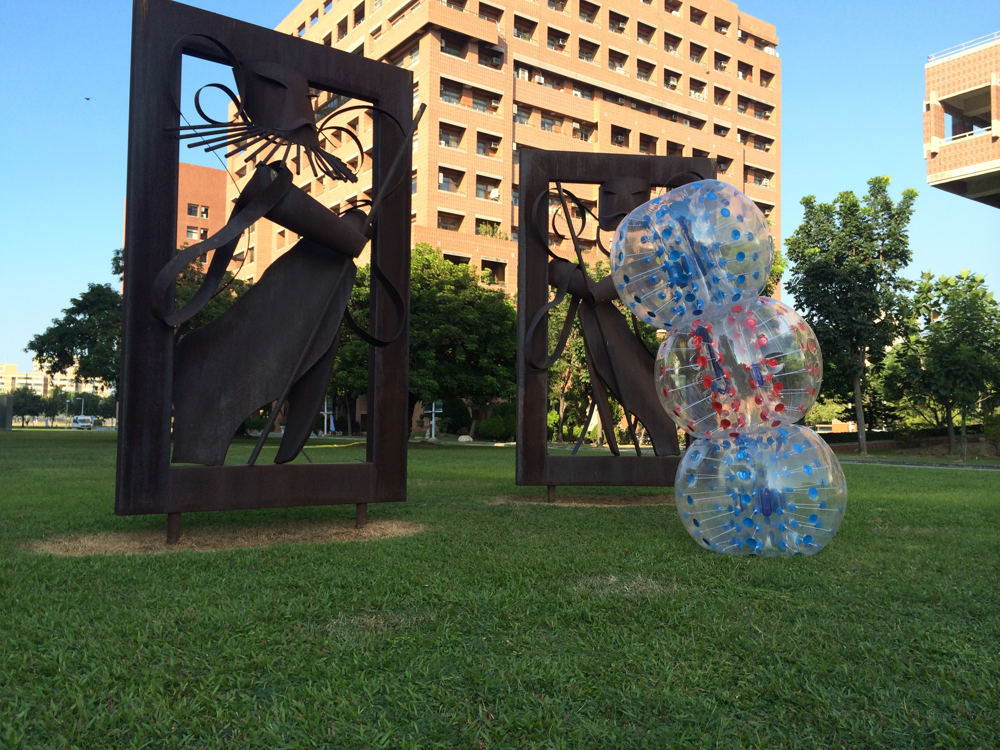

樂園設施 amusement park 
為增加校慶遊樂園活動之多元性，舉辦遊園馬車、泡泡足球、划船競賽、浪人體驗，為成大拓荒校慶增添更多可參與的形式，使每個參與成大校慶的人，在其中體會不同於以往的創新體驗，已達活動目的讓不畏創新嘗試存於每個人心中。
泡泡足球體驗賽 bubble Rush
傳統的足球比賽年齡層較不普遍且較無趣味性組成也由成人組成較多但泡泡足球在傳統中增添活動挑戰與趣味性質較能降低其危險性，適合普及大眾並鼓勵參與，搭上2014世界足球賽的熱潮，更能吸引人潮順利推動泡泡足球這項新興運動。
泡泡足球哪裡出現?
活動時間:11/9(日)早上九點至下午五點
活動地點:國立成功大學自強校區北側草地

泡泡足球是什麼?
泡泡足球 (bubble football) 是一種刺激好玩的新遊戲型態，參與者可以把自己套進大氣球裡，整場比賽每個人在場上皆可肆意連滾帶摔不用擔心受傷，這項風靡歐洲、日本等地的活動，現在想將這個運動和娛樂效果通吃的趣味活動，帶給成功大學的同學！泡泡足球不是專業比賽，不分男女、台灣人歪國人都可以玩！可以每場有8顆泡泡球，每隊4顆，同學們可以組4-8人為一隊，在11/9號校慶拓荒遊樂園當天，與另外一組同學體驗衝撞泡泡的樂趣!!
泡泡影片